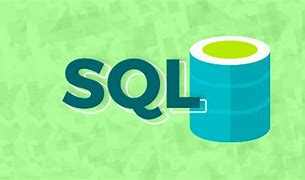

a linguagem sql é facil aprendizado , uma lingaguem de DB(BANCO DE DADOS) nessa tutorial mostrarei os comandos basicos do sql, eles sao agrupados em DML(CREATE DATBASE, CREATE TABLE,DROP TABLE,ALTER TABLE) DDL(INSERT INTO,UPDATE,SELECT,DELETE)
agora que o banco de dados foi criado e voce ja conhece os tipos primitivos vamos cria as tabelas create table nome da tabela (as variveis com os tipo primitivos) fica assim; create table nome da tabela ( nome varchar(150 )not null, cpf tinyint(12) not null, sexo enum('M','F'), dtnascimento date not null, salario decimal(10), primary key(cpf) )default charset=utf8; quando chamei o primary key significa que o cpf é a chave primaria , nao existir duas pessoas com mesmo cpf. para troca o nome da tabela depois de cria usamos alter table nome da tabela; depois da nossa tabela criada use o comando describe; para ver a estrutura da sua tabela agora vamos adiciona dados dentro dela com comando insert into fica assim; insert into nome da tabela(nome,cpf,sexo,dtnascimento,salario) value ('bruno','89956643300','M','1998-06-01','1500'); todos campo do value precisa usa aspa simples e o data de nascimento no padrão americano o not null obriga o usuario coloca para nao fica em branco para nao escrever esse codigo todo podemos abervia insert into nome da tabela value ('bruno','89956643300','M','1998-06-01','1500'); vamos atualiza os campos da nossa tabela com update , para toda nome ou qualque outro tipo de registro dentro da tabela vamos usa; update nome da tabela set nome da coluna=nome que quer muda where = linha que salario esta ex. update cliente set salario 1000 where = 5 ; eu alterei o salario para 1000 para deleta é um comando simples;delete from nome da tabela where= nome da coluna=valor dela assim; delete from cliente where nome = 'joao' ; agora vamos aprende a seleciona colunas com comando select, quando usamosselect * from nome da tabela estamos chamando todas as colunas pra seleciona uma coluna e procura algum especifico usamos os comandos. select nome da coluna from order by nome; usamos assim selecte nome,cpf,dtascimento from order by nome; order by (ordena pesquisa por nome) esse é o final dos comando basico em sql
Veja Tambem sobre;